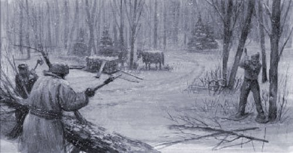
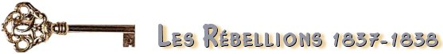

|

Jacques, our ancestor
of the seventh Charette generation to live in Canada, chose to
spend most of his life in the
Pays-d'en-Haut, long before the days of the belles histoires
and Curé Labelle. He took part in the first waves of settlement
of the North.
Later, he went on with his life in a fast-industrializing
town,
St-Henri-des-Tanneries. His descendants are
many.

The main
events that shaped the country in the 19th century. read
more >>>

The Papineaus are
a famous family to whom we are related through
Jacques's mother-in-law, as shown on the page about
the life of Jacques. read
more >>>

An overview of the rebellions of 1837-1838 in Upper and
Lower Canada. read
more >>>

|